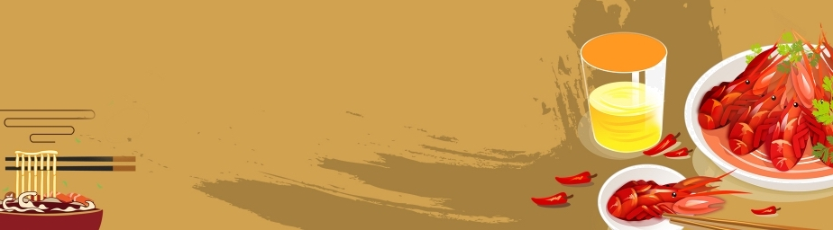

Since I came to the United States alone in 2017, I have rarely had the opportunity to eat the food from my hometown. But sometimes I miss my hometown and famlies too much, so I cook by myself. Over time, I became very good at cooking.
Every time I finish cooking, I will take pictures and post them. Sometimes I will shot for the cooking process and uploaded to social media platforms. I think food is something that can heal people's hearts.
Below are some of my favorite dishes, I hope you can try them if you have the opportunity.